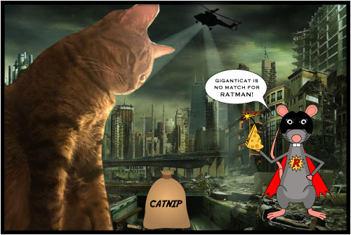

Any decent villian needs a vigilante superhero to combat them, so I created one for this Illustrator project- Ratman! Since I don't consider myself strong in the drawing department, I surprised myself with how well he turned out. Illustrator was my favorite application that we covered in this class. I'm excited to learn how to do even more with Illustrator when I take the class next fall.
It looks as though Ratman has lured Giganticat to this spot with a giant bag of catnip- her weakness! Will Ratman's cheese bomb be enough to take her down?
Keep exploring my wesbite to see what happens!